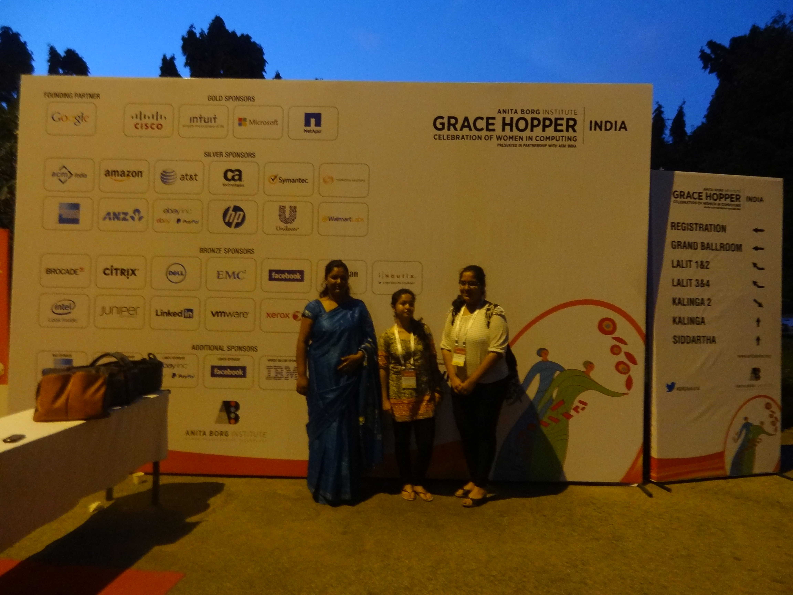
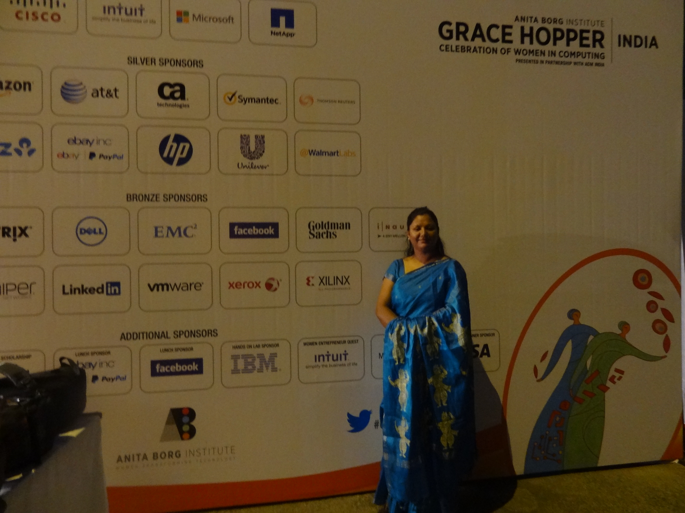
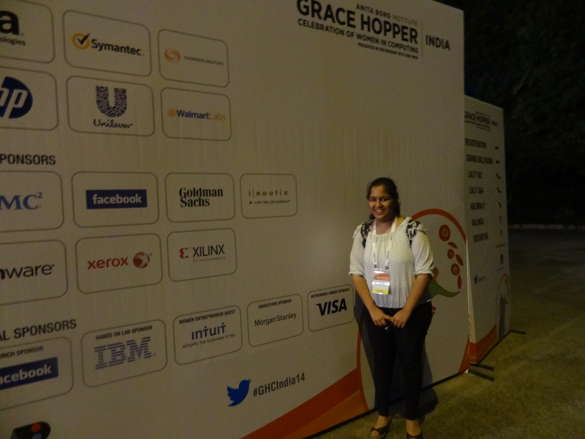
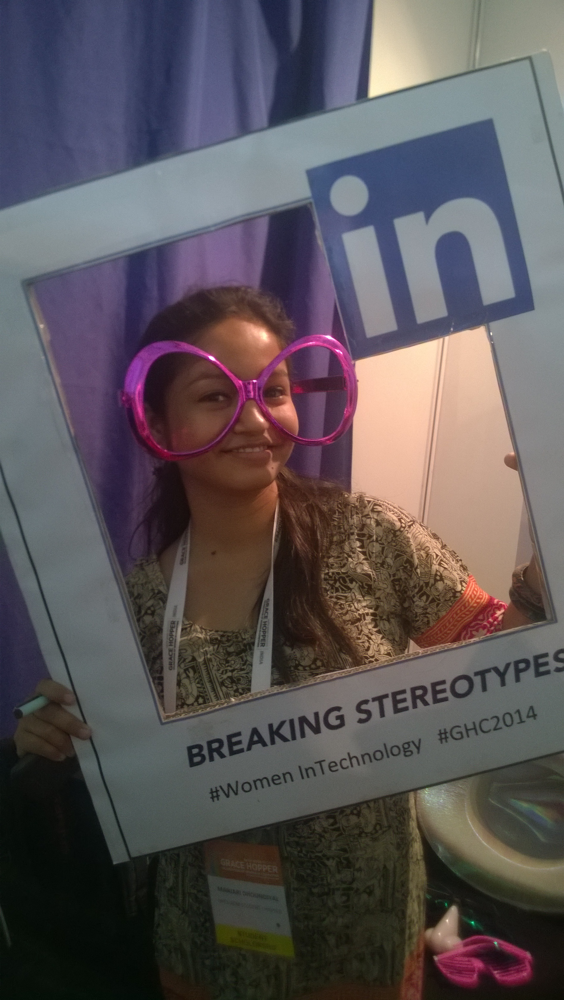

Association of Computer Machinery - Women
Women in Technology
Visit official siteWomen ACM Chapter
The Association for Computing Machinery (ACM) is a U.S.-based international learned society for computing. It was founded in 1947 and is the world's largest scientific and educational computing society. It is a not-for-profit professional membership group. Its membership is more than 100,000 as of 2011. Its headquarters are in New York City.
Now ACM is supporting, celebrating and advocating for women in computing.
ACM-W is the ACM committee on Women in technical fields. It celebrates, informs and supports women in computing, and works with the ACM-W community of computer scientists, educators, employers and policy makers to improve working and learning environments for women.
What do we do?
The motive of ACM-W is to support women in pursuing technical careers, finding like-minded colleagues, learning new skills and enjoying other related pursuits
The chapter provides a variety of activities to educate women about the opportunities in the field of computing, engage female students in exciting technical activities, connect students with women leaders in the field, encourage students to promote the field of technical careers to young girls, and promote the activities of ACM.
Recent Events
- The 2014-2015 academic year promises to be another exciting one for the Celebrations Project. This fall will see conferences in Goa, India (September 25-26)
- ACM-W annual event was held on February 15, 2014 at IIT-Delhi. This included great talks by Vint Cerf, Shafi Goldwasser, Dave Patterson, Radia Perlman and others
- ACM-W India has organized tete-a-tete by women experts at Chennai. This joint programme was launched on December 20, 2013 at Hotel Deccan Plaza, Chennai.
Recent Events
- The second talk was delivered by Rashmi Mohan, Senior Engineering Manager, Yahoo, Bangalore on January 24, 2014. The talk was on "Understanding User Engagement—Smart Phones to Wide Screens."
- 
- 
- 
- 
Why is there a need for ACM-W Chapter?
In the words of Swami Vivekananda "There can be no development of the society unless the condition of women is improved. It is not possible for a bird to fly with one wing". Women want to be treated as equals so much so that if a woman rises to the top of her field it should be a commonplace occurrence that draws nothing more than a raised eyebrow at the gender. We know that, even as the number of students in the different branches increases, there are still relatively few women. There have been many articles and reports describing the situation of women in technical fields.
Why is there a need for ACM-W Chapter?
The Association for Computing Machinery for Women in our college will be a group of students in the department (male and female) dedicated to cultivating a strong supportive community of women within our college, to helping members succeed academically, socially and professionally, and to demonstrating the importance and necessity of diversity in the technical world. The ACM-W is a nation-wide organization that aims to recruit more women into technical fields.